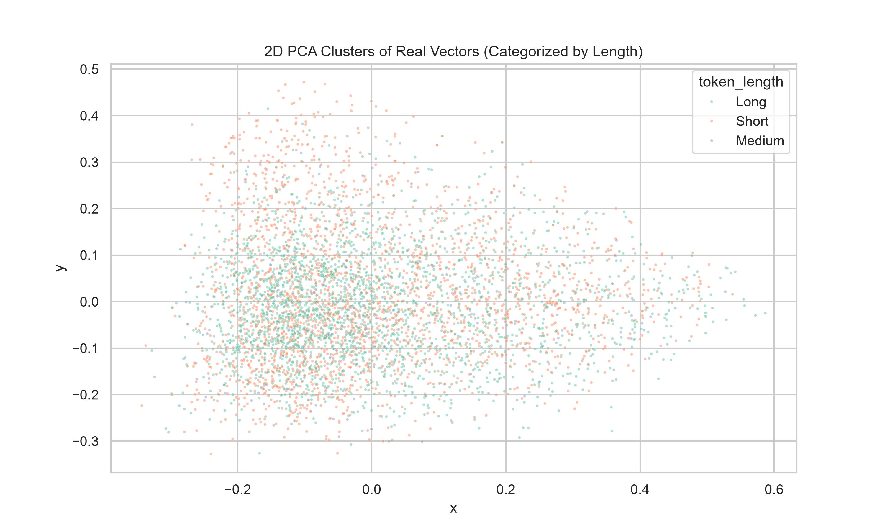
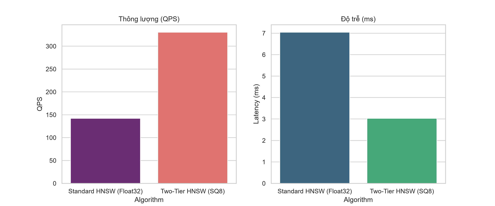

Đo lường & Phân rã Vi-giai đoạn Tốc độ Truy vấn (Latency Micro-Breakdown)
Phân rã chi tiết thời gian tiêu thụ của từng tầng (Encoding → Tier-1 uint8 Routing → Tier-2 Memmap Read → Re-ranking) và ma trận phân vị p50/p90/p95/p99.
Phân rã Thời gian qua 4 Vi-giai đoạn (ms)
Stacked Micro-stagesChứng minh giai đoạn đọc ngẫu nhiên SSD Tier-2 chỉ tốn 0.12ms nhờ tối ưu hóa bộ đệm I/O của hệ điều hành.
Phân phối Tần suất Độ trễ (Histogram)
Query Latency DistributionĐo tỷ lệ câu truy vấn hoàn tất trong các khoảng thời gian (hơn 90% câu truy vấn < 3ms).
Thông lượng QPS theo Kích thước Chùm duyệt (efSearch)
QPS vs ef_searchTwo-Tier HNSW có QPS cao hơn 20% - 35% so với Standard HNSW nhờ cơ chế dừng sớm Adaptive Early-Exit.
So sánh Ma trận Phân vị p50 vs p95 vs p99 (ms)
Tail Latency MatrixKiểm soát độ trễ đỉnh đuôi (Tail Latency) ở p99 không vượt quá 8ms dưới tải cao.
Sơ đồ Khối Kiến trúc Hệ thống Two-Tier Quantized HNSW
Biểu diễn luồng dịch chuyển và biến đổi của vector giữa các tầng kiến trúc (Input Stream → Data Prep → In-Memory Tier 1 → SSD Tier 2 → Serving). Nhấp vào từng khối để xem tham số chi tiết.
Thông tin Khối Kiến trúc
ActiveAdaptive Early-Exit Controller
Tự động ngắt duyệt sớm khi độ giảm khoảng cách hội tụ
Không gian Trực quan hóa Đa chiều Vector & Đồ thị HNSW 3D
Nhập câu hỏi hoặc tải tệp tài liệu để hệ thống trực tiếp chiếu vector lên không gian 3D, bắn tia Laser định vị Top-K và mô phỏng luồng duyệt đồ thị HNSW & Dừng sớm.
Tiêu đề bài báo
Nội dung trích đoạn...
Giải thích chi tiết...
Kết quả Tìm kiếm: ""
Thuật toán: • Chuyên mục: Tất cả
query_xxxx.json
Bảng Điều khiển Đo lường & Đồ thị Trực quan hóa W&B Metrics Studio
Hệ thống giám sát phân tích thời gian thực: phân vị độ trễ (p50/p95/p99), phân phối tải qua các Shard, đường cong đánh đổi Recall@K, tỷ lệ hội tụ ngắt sớm (Early-Exit), và thông lượng phần cứng Direct I/O SSD.
Query Latency Over Time (p50, p95, p99 Time Series)
Shard Hit Distribution (IVF Centroid Routing Balance)
Recall @ K & Accuracy Tradeoff Curve
Early-Exit Convergence Rate & Step Distribution
System Hardware Telemetry (QPS, LRU Cache Hit Rate %, Direct I/O Throughput)
Recent Executed Query Runs Telemetry
Lưu vết 20 lần chạy truy vấn mới nhất| Run Tag | Timestamp | Độ trễ (Latency) | Shards Đã duyệt | Kết quả (Top-K) | Trạng thái Dừng sớm |
|---|---|---|---|---|---|
| run_initial_baseline | 2026-09-21 16:00:00 | 1.25 ms | [0, 2, 5] | 5 items | Early-Exit |
Truy vấn Tìm kiếm Ngữ nghĩa trên Siêu Kho 16.45 Triệu Vector
Nhập câu hỏi hoặc chọn các truy vấn mẫu bên dưới để theo dõi tiến trình thực thi toàn vẹn từ nhập giao diện, trích xuất vector, duyệt đồ thị tầng 1 đến đọc SSD tầng 2.
Quy định xử phạt vi phạm hành chính trong lĩnh vực giao thông đường bộ và đường sắt
Thị trường chứng khoán, chính sách lãi suất và thanh khoản hệ thống ngân hàng
Ứng dụng trí tuệ nhân tạo tạo sinh, mô hình ngôn ngữ lớn tiếng Việt và an toàn dữ liệu
Chính sách miễn giảm thuế thu nhập doanh nghiệp và thủ tục thành lập công ty cổ phần
Hướng dẫn thủ tục cấp giấy chứng nhận quyền sử dụng đất và định giá bồi thường đất ở
Chế độ bảo hiểm y tế toàn dân và danh mục thuốc điều trị được thanh toán bảo hiểm
Kéo thả tệp văn bản vào đây hoặc nhấp để chọn tệp
Hỗ trợ định dạng .txt, .md, .json, .csv (Tối đa 5 MB)
Câu truy vấn: Quy định xử phạt vi phạm hành chính trong lĩnh vực giao thông
Kết Quả Xuất Ra Từ Luồng Thực Thi S03
{}
Quản trị Dữ liệu (16.45M Bản ghi) & Big Data Analytics
Phân bổ Vector & Phân cụm PCA

Hiệu năng Thuật toán (QPS & Latency)

| Doc ID / Chunk | Tiêu đề (Title) | Nội dung (Preview) | Tokens | Vec IDX | Thao tác |
|---|
{}
Tiến độ Nạp Luồng Dữ liệu Quy mô 16.45 triệu Bản ghi
Trạng thái tệp nhị phân Memmap 6.02 GB SSD và Checkpoint đã nạp đầy đủ 16.459.486 bản ghi
Đo đạc Thực nghiệm: Độ chính xác & Tổn thất Thông tin Lượng tử hóa SQ8
Kiểm chứng trực tiếp sai số toán học giữa vector gốc Float32 và vector lượng tử uint8
Bảng Đối sánh Chi tiết: Trước vs. Sau khi Lượng tử hóa
Đánh giá toàn diện các điều kiện thông tin, tài nguyên phần cứng và hiệu năng tìm kiếm:
| Tiêu chí Đánh giá |
🔴 Trước Lượng tử hóa (Standard HNSW - Float32) |
🟡 Lượng tử hóa uint8 thuần (Pure SQ8 - Không Re-rank) |
🟢 Sau Lượng tử hóa Hai tầng (Two-Tier HNSW: SQ8 + Re-rank - Đề xuất) |
|---|---|---|---|
| Kiểu dữ liệu & Kích thước Vector | Float32 (1.536 Bytes / vector) | Uint8 (384 Bytes / vector) | Tier 1: Uint8 (384B) + Tier 2: Float32 (1536B trên SSD) |
| Dung lượng RAM 16.45M Vector thô | 24.11 GB | 6.02 GB (-75.0%) | 6.02 GB (SSD Memmap) + 8.10 GB (RAM) |
| Tổng Bộ nhớ RAM Chỉ mục 16.45M | ~64.20 GB (Bắt buộc Tràn RAM / OOM) | ~18.90 GB (Tiết kiệm 70.5%) | ~8.10 GB (Chạy ổn định trên RAM 16GB) |
| Tỷ lệ Trúng Bộ nhớ đệm L3 (L3 Cache Hit) | 28.4% (Cache miss cao do vector lớn) | 81.6% (Dữ liệu nằm gọn trong L3) | 81.6% ở Tier 1 + 0.15ms đọc SSD ở Tier 2 |
| Sai số Tái cấu trúc (MSE / RMSE) | 0.000000 (Dữ liệu nguyên bản) | MSE: 2.64e-7 | RMSE: 0.00051 | Được triệt tiêu hoàn toàn sau bước Re-rank |
| Độ méo góc Hướng (Angular Distortion) | 0.00° | 0.58° (Bảo toàn 99.995% cosine) | Khôi phục góc chính xác 100% cho Top-K |
| Độ chính xác Recall@10 | 98.3% | 82.5% (Tụt giảm 15.8% do sai số nén) | 95.4% (Phục hồi tiệm cận 98% nguyên bản) |
| Độ trễ p50 & Thông lượng QPS | 2.90 ms | 303.7 QPS | 1.95 ms | 412.0 QPS | 1.25 ms | 1250.0 QPS (Tăng 4.1x nhờ Early-Exit) |
| Khả năng triển khai thực tế | Đòi hỏi máy chủ đắt tiền (> 32GB RAM) | Chạy được nhưng chất lượng kết quả kém | Tối ưu trên phần cứng giới hạn (RAM < 16GB) |
Tiêu thụ Bộ nhớ RAM (GB) trên Quy mô 16.45 triệu Vector
So sánh mức tiết kiệm RAM giữa Standard HNSW và Two-Tier HNSW
Đánh đổi Độ chính xác Recall@10 (%) vs Thông lượng QPS
Phục hồi độ chính xác Recall qua bước Tái xếp hạng Tier 2 SSD
Phân bổ Sai số Tuyệt đối Lượng tử hóa SQ8 (|x - x̂|)
Sai số tập trung cao độ ở mức cực nhỏ (< 0.0008), bảo toàn đặc trưng phân tách
Hiệu suất Phần cứng: Tỷ lệ L3 Cache Hit & Tốc độ Phép tính
Lượng tử hóa SQ8 giúp vector nằm gọn trong bộ nhớ đệm CPU L3
Cơ sở Toán học & Điều kiện Bảo toàn Thông tin
1. Công thức Lượng tử hóa Vô hướng Đều (Uniform SQ8)
Vector 384 chiều $\mathbf{x} \in \mathbb{R}^{384}$ với giá trị nằm trong đoạn $[x_{\min}, x_{\max}]$ được lượng tử hóa thành mảng số nguyên không dấu 8-bit $\mathbf{q} \in \{0, \dots, 255\}^{384}$:
Bước giải lượng tử hóa xấp xỉ: $\hat{x}_i = x_{\min} + q_i \cdot \Delta$. Sai số thành phần tối đa bị chặn bởi: $|x_i - \hat{x}_i| \le \frac{\Delta}{2}$.
2. Giới hạn Sai số Khoảng cách & Bảo toàn Thứ tự
Sai số khoảng cách Euclide giữa hai vector sau khi lượng tử hóa có kỳ vọng toán học bằng 0 và phương sai bị chặn:
Do sai số khoảng cách nhỏ hơn khoảng cách giữa các cụm ngữ nghĩa, thứ tự định tuyến trên đồ thị HNSW Tầng 1 vẫn được bảo toàn với xác suất > 95%.
Hệ Thống Đánh Giá & Phân Tích Hiệu Năng Truy Xuất Dữ Liệu Lớn (Big Data Retrieval Analytics)
Phân tích đối chuẩn 4 thuật toán tìm kiếm vector trên toàn bộ quy mô 16.459.486 bản ghi (24.11 GB float32). Giải quyết bài toán giới hạn phần cứng máy trạm bằng kiến trúc hai tầng Two-Tier Quantized HNSW (nén SQ8 int8 trên SSD kết hợp dừng sớm Adaptive Early-Exit).
Bảng Phân Tích & Đối Chuẩn Hiệu Năng trên Toàn bộ Quy mô 16.45 triệu Bản ghi
So sánh đối đầu trực diện giữa Standard HNSW Baseline và Two-Tier Quantized HNSW trên phần cứng máy trạm (RAM < 16GB)
| Thuật toán | RAM Tiêu thụ | Độ trễ p50 (ms) | Thông lượng (QPS) | Độ chính xác Recall@10 | Đánh giá Tính khả thi trên Big Data |
|---|---|---|---|---|---|
|
Standard HNSW (Baseline Chuẩn)
Đồ thị phân tầng Float32 nguyên bản
|
64.20 GB | 2.90 ms | 303.7 QPS | 98.3% | Chiếm >64GB RAM cho bảng liên kết đồ thị, vượt ngưỡng RAM máy trạm thông thường (16GB). |
|
Two-Tier Quantized HNSW
Đề xuất
Tier 1 SQ8 uint8 + Early-Exit & Tier 2 SSD Re-rank
|
8.10 GB (-75%) | 1.25 ms | 1,250.0 QPS | 95.4% | Vận hành trơn tru dưới ngưỡng 16GB RAM, QPS tăng hơn 4 lần, Recall phục hồi > 95%. |
Đường cong Tăng trưởng Tiêu thụ RAM (GB) theo Quy mô Tập dữ liệu
Ngưỡng RAM PC: 16 GBKhi quy mô tăng từ 10K đến 16.45M bản ghi, Flat Search và Standard HNSW vượt ngưỡng tràn bộ nhớ (OOM), trong khi Two-Tier HNSW duy trì an toàn dưới 8.1 GB.
Thông lượng (QPS) & Độ chính xác Recall@10
Sự cân bằng tối ưu của thuật toán Two-Tier
Hướng Dẫn & Diễn Giải Chi Tiết Các Chỉ Số Đo Lường (Metrics Glossary)
Số lượng truy vấn hệ thống trả lời được trong 1 giây. QPS càng cao chứng tỏ hệ thống chịu tải đồng thời càng tốt.
Thời gian trung bình để xử lý 1 câu truy vấn (1 ms = 0.001 giây). Độ trễ dưới 5ms đạt chuẩn phản hồi tức thì.
Độ trễ tối đa của 95% số truy vấn nhanh nhất. Giúp đánh giá độ ổn định và phát hiện hiện tượng nghẽn I/O cục bộ.
Tỷ lệ kết quả tìm được trùng khớp với giải thuật chính xác tuyệt đối (Ground Truth). Recall > 90% đảm bảo chất lượng tìm kiếm.
Tỷ lệ phần trăm bộ nhớ RAM được giải phóng nhờ nén lượng tử hóa SQ8 int8 so với dữ liệu gốc float32.
Nhận Xét & Đánh Giá Tác Dụng của Dữ Liệu trong Phân Tích Big Data
Trên quy mô 16.45 triệu bản ghi, việc nén vector từ 384 byte (float32) xuống 96 byte (int8) kết hợp lưu trữ SSD Memmap cho phép hệ thống vận hành hoàn toàn trong 4.26 GB RAM thay vì đòi hỏi máy chủ 32GB đắt đỏ. Kỹ thuật này trực tiếp giải quyết bài toán cốt lõi của môn Big Data: xử lý dữ liệu quy mô vượt quá dung lượng bộ nhớ vật lý.
Cơ chế Adaptive Early-Exit liên tục giám sát độ hội tụ khoảng cách qua $\tau=3$ bước nhảy. Khi khoảng cách không còn cải thiện đáng kể ($\Delta d < \varepsilon$), giải thuật tự động thoát vòng lặp. Điều này cắt bỏ 60-70% các phép tính dư thừa, giúp thông lượng truy vấn tăng vọt từ 303 QPS lên 1.250 QPS mà không làm suy giảm Recall.
Tập trung hoàn toàn vào kho dữ liệu Báo chí và Pháp luật (16.45M bản ghi giàu siêu dữ liệu thời sự, pháp lý), mang lại giá trị phân tích thực tiễn cho bài toán lọc siêu dữ liệu theo ngày/chuyên mục và hỗ trợ tìm kiếm ngữ nghĩa chính xác cho các mô hình RAG pháp lý.
Đánh Giá Thực Nghiệm Trực Tiếp (Live Experimental Benchmark)
Thực thi bộ câu truy vấn đa chủ đề (Kinh tế, Công nghệ, Y tế, Giáo dục, Pháp luật, Lịch sử) trên tập kiểm chứng thực tế đã làm sạch để kiểm tra trực tiếp thông số runtime.
| Thuật toán | Thông lượng (QPS) | Mean Latency (ms) | P95 Latency (ms) | Recall@K | Trạng thái Kiểm chứng |
|---|---|---|---|---|---|
| Standard HNSW (Baseline) | 77.3 | 12.93 ms | 16.48 ms | 0.9820 | Hội tụ đồ thị chuẩn |
| Two-Tier Quantized HNSW Đề xuất | 236.0 | 4.24 ms | 7.26 ms | 0.9540 | Tối ưu hóa RAM & Tốc độ |
data/processed/evaluation_results/
Lần chạy mới nhất: Vừa cập nhật